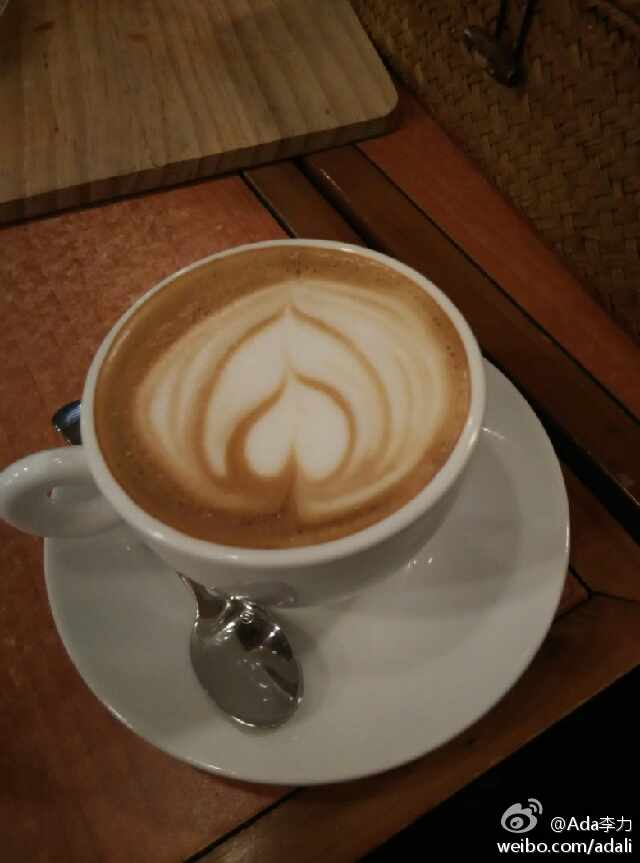

每天晚上睡前记录下今天完成的事情。我现在就这么做。不然总是会有焦虑，觉得进度太慢。但看看记事本上的记录后，容易心安些，因为时间就那么多。---:该账号因被投诉违反法律法规和《微博社区公约》的相关规定，现已无法查看。查看帮助 网页链接
老板和老板娘都有自己最拿手的，老板喜欢做咖啡，说起咖啡经眉飞色舞。老板娘擅长做意大利薄饼批萨，是跟意大利批萨大师学的，土豪同事说Max评论说味道跟他在欧洲吃的味道一样，被我们誉为最贴心的赞赏。 景山前街 